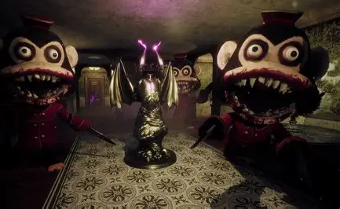

Monkey Business

Informação Geral
Nome Da Fase: Monkey Business
Local Da Fase: Hotel
Perseguidores: Murder Monkeys
Malak
Objetivo: Coletar cristais roxos e fugir
Local Da Fase: Hotel
Perseguidores: Murder Monkeys
Malak
Objetivo: Coletar cristais roxos e fugir
A fase é a primeira em que o jogo bota o player para enfrentar, o player spawna de inicio em uma área com um portal vermelho e segue adiante até entrar em um labirinto para iniciar a fase, sendo uma fase primaria os inimigos não são tão refinados com poderes mirabolantes ou desafiadores, a prenda da fase é graças ao fato de que há diversos Murder Monkeys pode ocorrer do player ser encurralado e morto. Essa é a fase com menor quantidade de fragmentos para ser pego; Diferente de todas as outras fases que possuem zonas diferentes, essa fase só possue uma. Ao finalizar o objetivo os Murder Monkeys são substituidos por versões mais fortes e de roupagem diferente, e o player deve fugir do local ao pegar um elevador que o leva a área do portal, atravessando o para fugir.